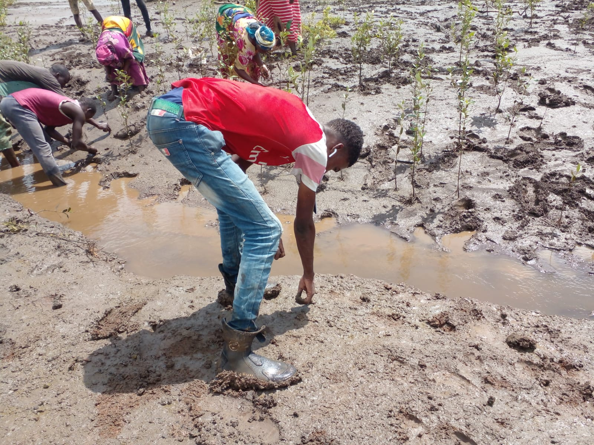
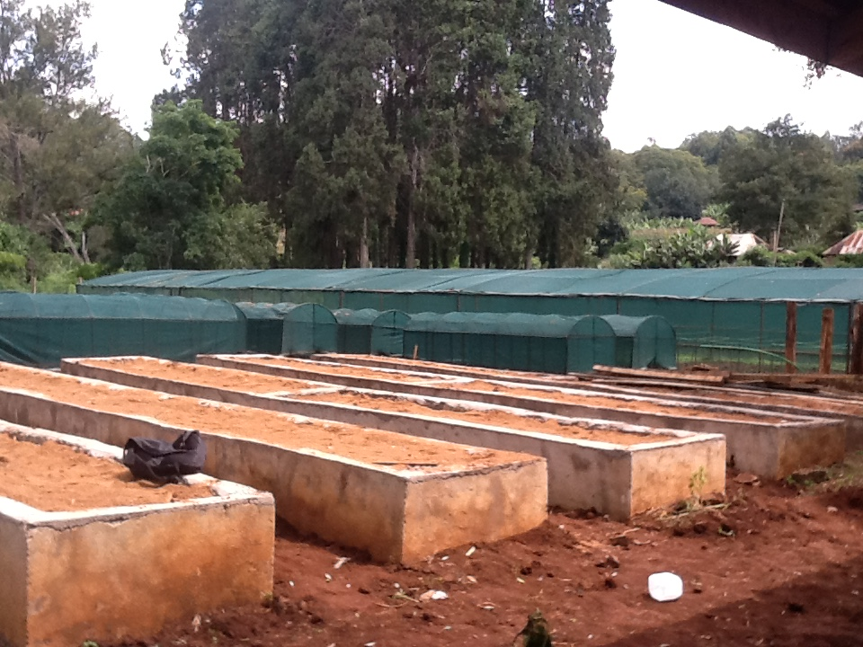
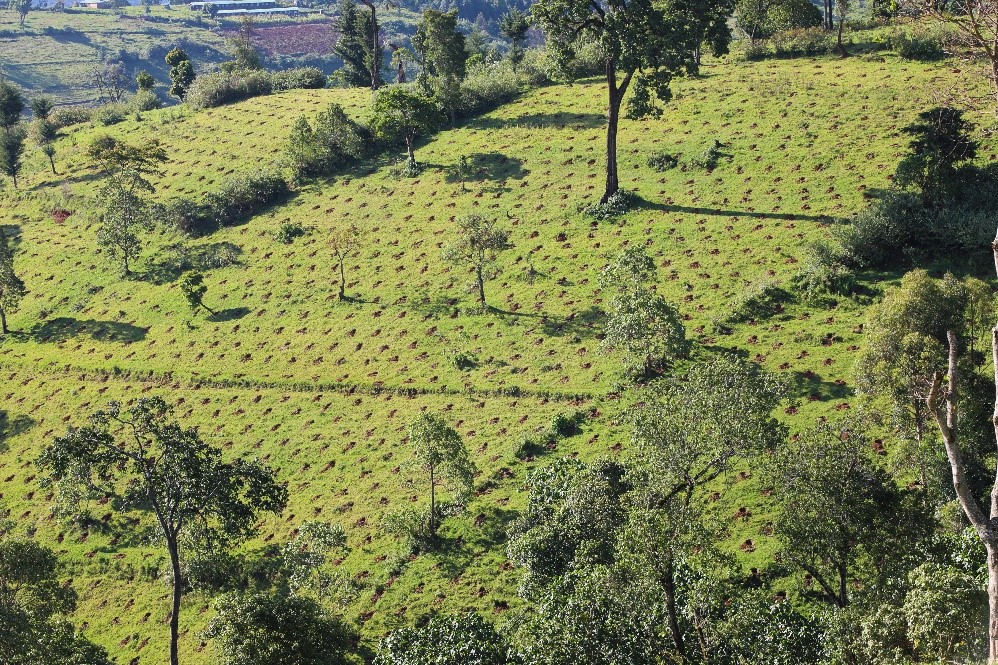

Nature
Nature0
Trees planted
Community Conservation in Kenya
Community-led conservation efforts restoring land, protecting wildlife, and fighting climate change in Kenya.
Impact Snapshot
0
Trees planted
0
Hectares restored
0
Community groups engaged
0
Learners reached
Focus Areas
Protecting the environment through targeted, high-impact initiatives.
Restoring degraded land through community-led tree planting campaigns to combat climate change.
Protecting vital watersheds to ensure clean, accessible water and resilient ecosystems.
Safeguarding natural habitats and minimizing human-wildlife conflict across diverse landscapes.
Find Your Path
Clear entry points make it easier for supporters, volunteers, and organizations to act.
Hands-on
Join planting days, restoration events, and field education activities with local teams.
VolunteerFinancial Support
Support nurseries, field logistics, school outreach, and long-term stewardship work.
DonateInstitutional
Collaborate as an NGO, business, school, or county stakeholder to scale measurable impact.
PartnerVoices From the Field
"The tree nursery gave our youth group practical work and a reason to protect the riverbank."
"Students do not just hear about conservation now. They plant, measure, and follow the change."
"NatureKeep works with local people instead of around them, and that makes the projects last."
Latest From the Field

Field teams coordinated community planting days and set up follow-up monitoring for survival rates.

Workshops focused on nursery care, seed selection, and preparing resilient indigenous species.

Conservation education sessions highlighted the link between forests, soils, and clean water access.